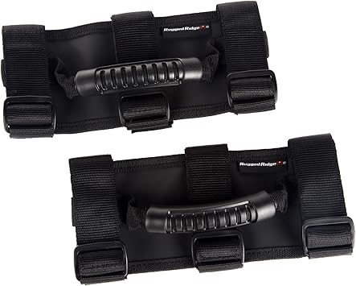
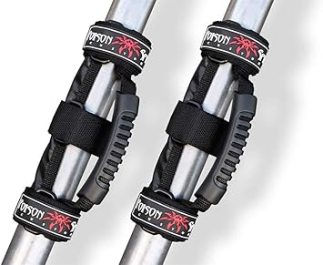

We tested and compared the top options. Here's what actually delivers.
One of the top-rated jeep wrangler grab handles on the market. Combines solid build quality with real-world performance that holds up over time.

Check Price on Amazon →One of the top-rated jeep wrangler grab handles on the market. Combines solid build quality with real-world performance that holds up over time.
One of the top-rated jeep wrangler grab handles on the market. Combines solid build quality with real-world performance that holds up over time.
One of the top-rated jeep wrangler grab handles on the market. Combines solid build quality with real-world performance that holds up over time.

Check Price on Amazon →One of the top-rated jeep wrangler grab handles on the market. Combines solid build quality with real-world performance that holds up over time.
| Product | Best For | Commission Category | Link |
|---|---|---|---|
| Rugged Ridge Grab Handles | Best Overall | Automotive 4.5% | Amazon → |
| Smittybilt Wrangler Handles | Best Value | Automotive 4.5% | Amazon → |
| Mopar Grab Handles | Runner Up | Automotive 4.5% | Amazon → |
| Poison Spyder Wrangler Handles | Runner Up | Automotive 4.5% | Amazon → |
| Barricade Grab Handles | Runner Up | Automotive 4.5% | Amazon → |
Focus on fit for your specific use case, build quality, and long-term value. The cheapest option rarely holds up, and the most expensive isn't always necessary. Match the product to how you'll actually use it.
Often yes — premium jeep wrangler grab handles typically use better materials, last longer, and perform more consistently. If you'll use it regularly, spending more upfront usually saves money over time.
Avoid buying based on specs alone without checking real-world reviews. Also watch for vague warranties and no-name brands with no support track record. Stick to established names with proven reliability.
Quality jeep wrangler grab handles should last several years with proper use and maintenance. Look for products with at least a 1-year warranty as a baseline signal of the manufacturer's confidence.
Amazon is usually competitive and convenient, but check manufacturer sites for bundles or warranty deals. Prime shipping and easy returns make Amazon the default choice for most buyers.
Recommended from Bull Strap:
Also from Bull Strap: Bull Strap Gladiator grab handles — 2019–2022 Jeep Gladiator JT accessories.
Bartact makes model-specific grab handles engineered for each Jeep generation. For 2024+ JL/JLU and Gladiator, Bartact invented the only SRS airbag-safe grab handle — every other handle on these vehicles is a safety hazard for SRS roll bar airbag deployment.